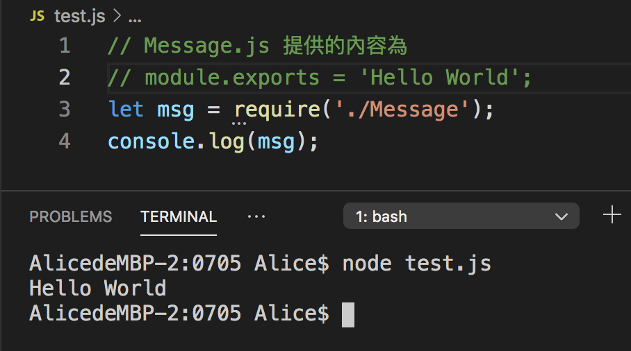
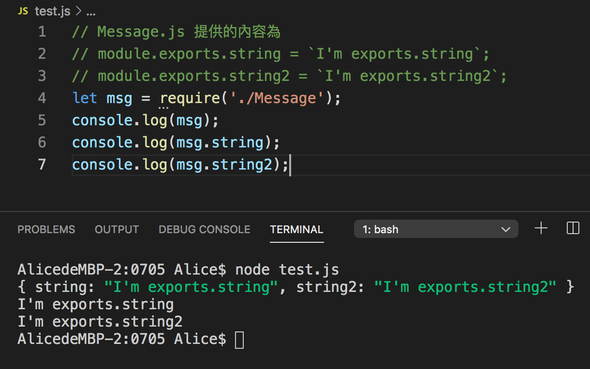
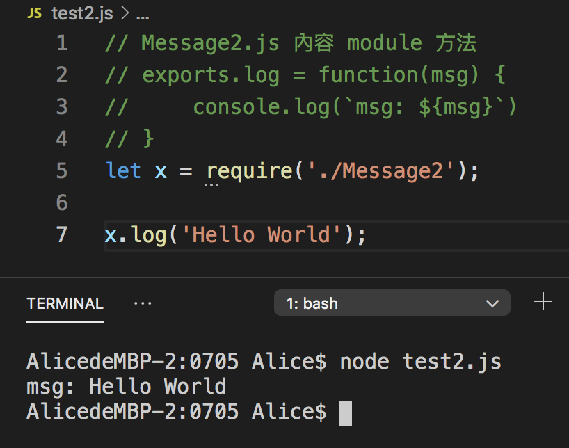
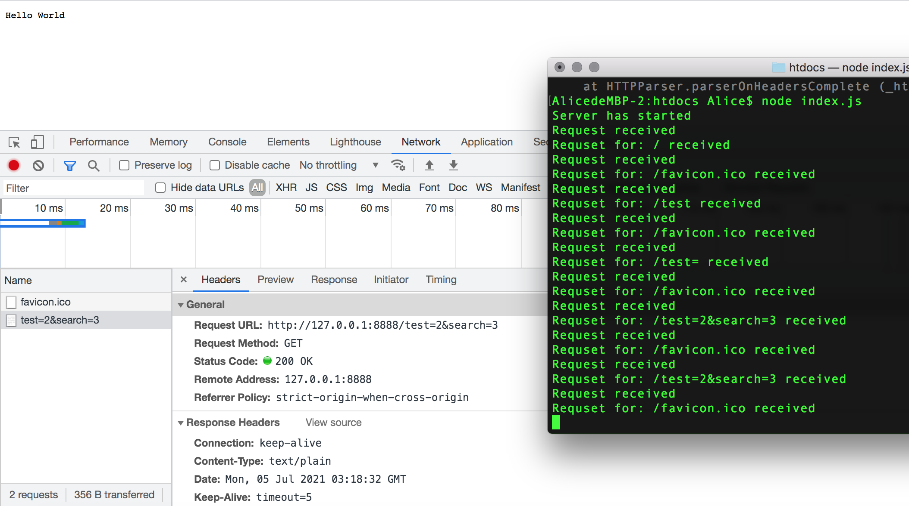

2021/07/05 Web front-end development
Node.js
module.exports = ‘Hello World”;
module 代表這個模組， exports 代表進入這個模組所提供的服務。引用模組時，使用 require。require 為 node.js 的指令。（寫 module.exports 或 exports 都可以）


下面是 module 方法的使用方式：

搞了好久想說怎麼一直不行，原來我儲存的檔案不是我 run 的檔案 RRRR.....心累，頭暈。

web 伺服器（web server）
- 接受使用者端的請求（request, 網頁路徑）
- 根據請求回應（response）=> 產生網頁 = 網頁標題（header）+ 網頁的內容（html+css+JS）
index.js => server.js（接收 request，透過 response 產生網頁。經由參數傳遞路由處理函數 ---> router.js 處理路徑）
modules 模組
我第一次使用這個方法，一查之下發現很好使用，所以想記錄看到的文章與學習到的內容。在上課時看到這篇文章 - 《模組系統》 使用模組有三個重點：
- ES6的模組程式碼會自動變成 strict-mode（嚴格模式） ，不論你有沒有使用"use strict"在程式碼中。
- ES6的模組是一個檔案一個模組
- FES6模組使用 export（輸出）與 import（輸入）語句來進行模組輸出與輸入。輸出通常位於檔案最後，輸入位於最前面。
《MDN JavaScript modules 模板》 推薦閱讀！
使用 .js 擴展名的模組文件，但在其它一些文章中，你可能會看到 .mjs 擴展名的使用。V8推薦了這樣的做法，比如有下列理由（但作者還是建議使用.js）：
- 比較清晰，這可以指出哪些文件是模組，哪些是常規的 JavaScript。
- 這能保證你的模組可以被運行時環境和構建工具識別，比如 Node.js 和 Babel。
為了獲得模組的功能要做的第一件事是把它們導出來。使用 export 語句來完成。最簡單的方法是把它（指 export 語句）放到你想要導出的項前面。export 要放在最外層，不能夠在函數內使用 export 。
一個更方便的方法導出所有你想要導出的模組的方法是在模組文件的末尾使用一個export 語句，語句是用花括號括起來的用逗號分割的列表。如下：
把模組應用到 HTML 時，需要把 type="module" 放到 script 標籤中
你只能在模組內部使用 import 和export 語句 ；不是普通腳本文件。
《Day 16 - 了解 JavaScript Module》 這篇也推薦閱讀，易懂好吸收！
畫重點如下：
- 一個檔案僅能有唯一的 default export，export 時以 default export 的 component 不用給予特定名稱，且在 import 時可以設任何的名字來使用。
- 同個檔案可以 named export 多個 component，export 和 import 時要以同樣的名字進行（import 後可 renamed），在 import 時要以 { } 包住。
- default export 在 import 時不用 { } 以同樣名字 import。
Summary
我對 node.js 很不熟，今天學到了很多！沒想到還有 modules 這樣的東西，當然也就不知道 require、export....這些東西。雖然今天上的課有些還不是很懂，但很高興我知道有哪些方向要繼續去探詢！要努力鑽研 node.js 了！好多需要知道的 modules，突然間湧起了好多幹勁！